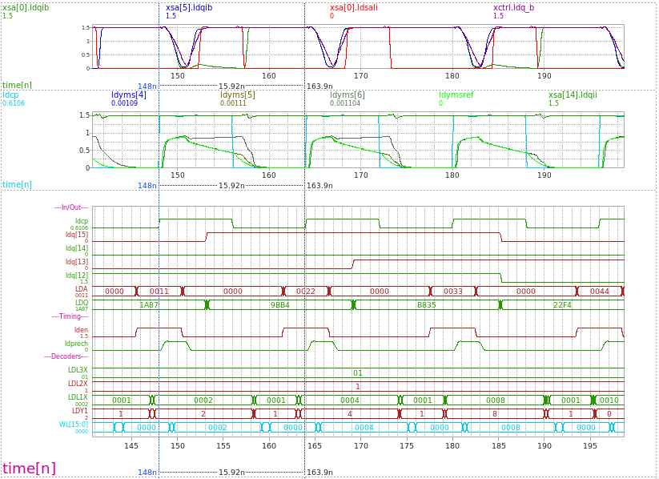
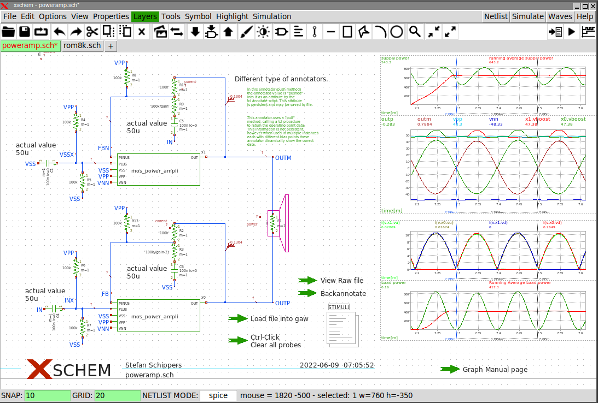

PREV
UP
NEXT
WAVE VIEWING
Spice simulation data can be viewed directly in Xschem.
- Overlayed and stacked analog / digital waveforms, cross-probing of nodes into graph
- Simple RPN notation for entering waveform expressions (average, power, derivative,...)
- Cursors for time / delay / amplitude measurements
- Graph configuration (zoom, waveforms, colors) is saved with the schematic

